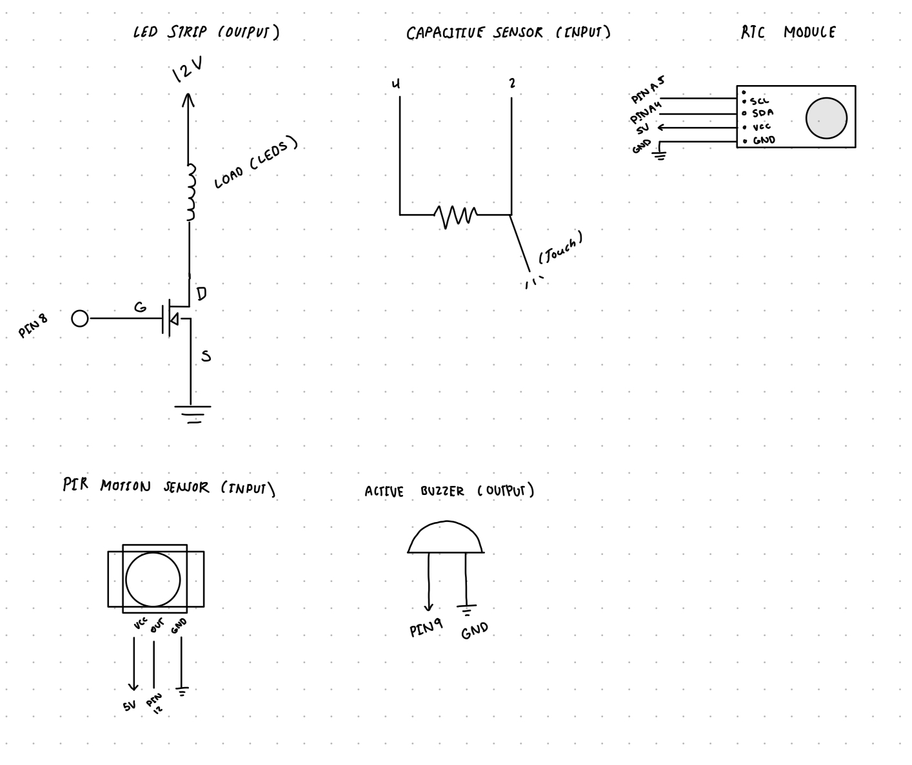
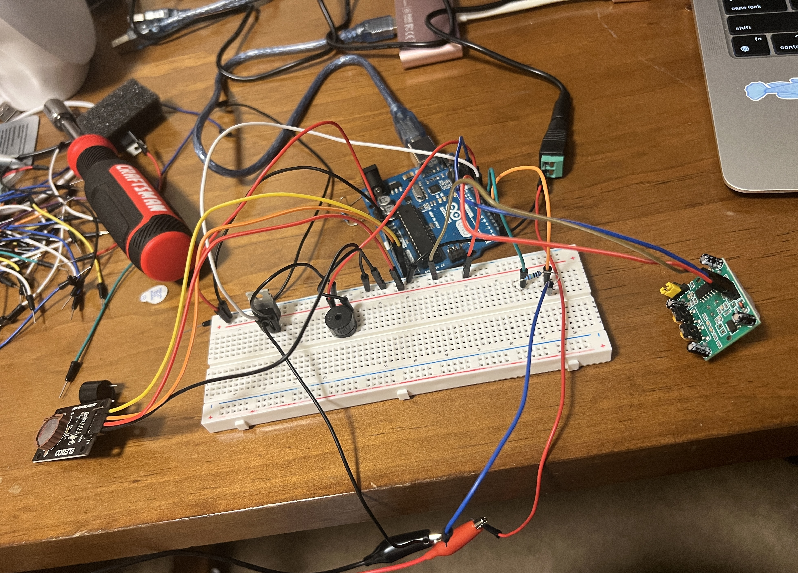
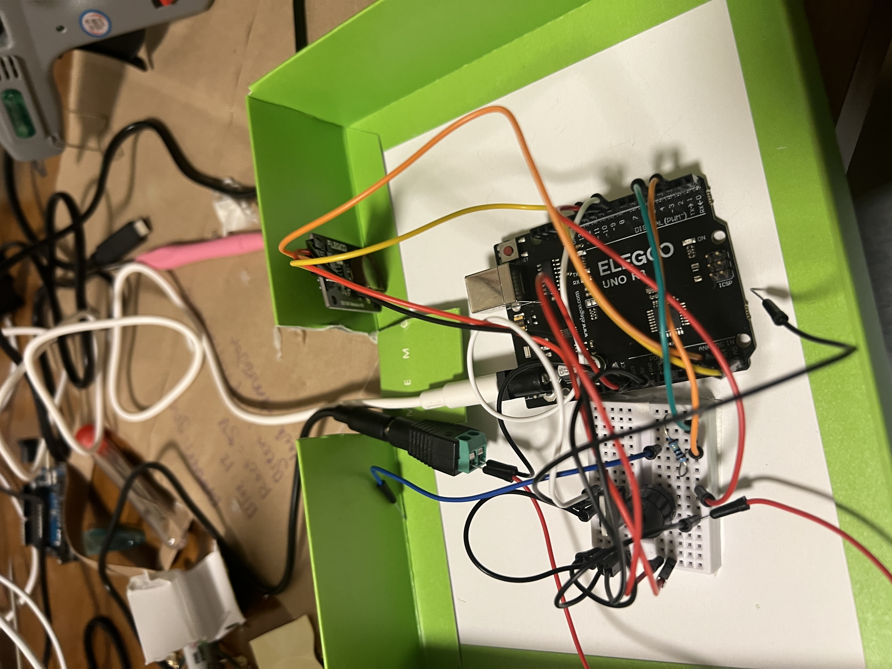
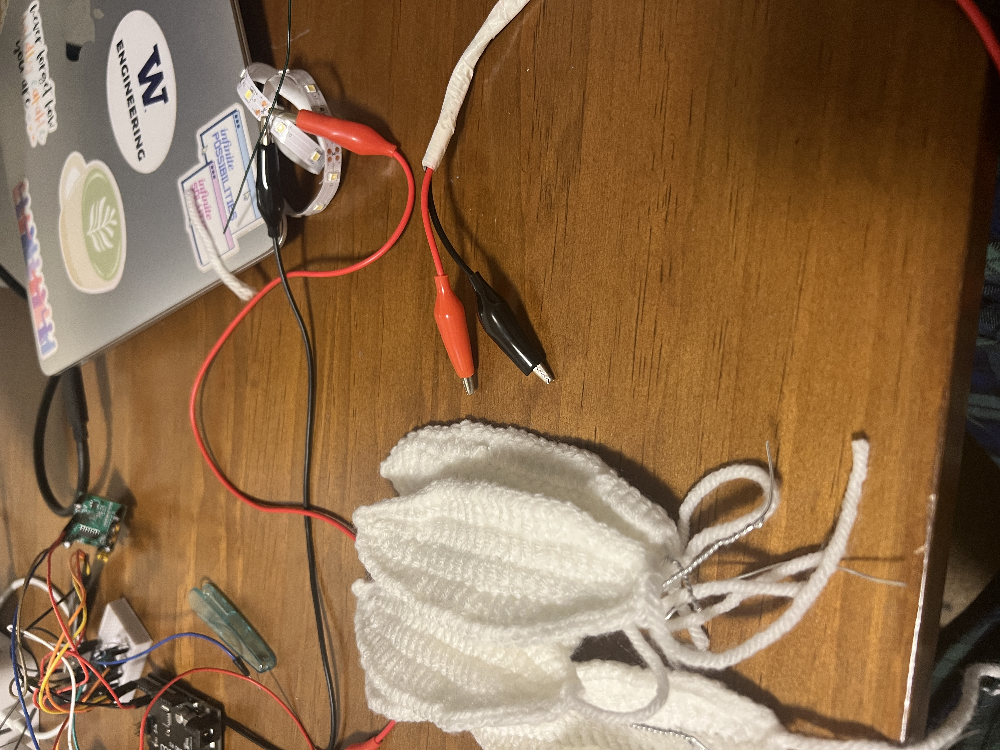
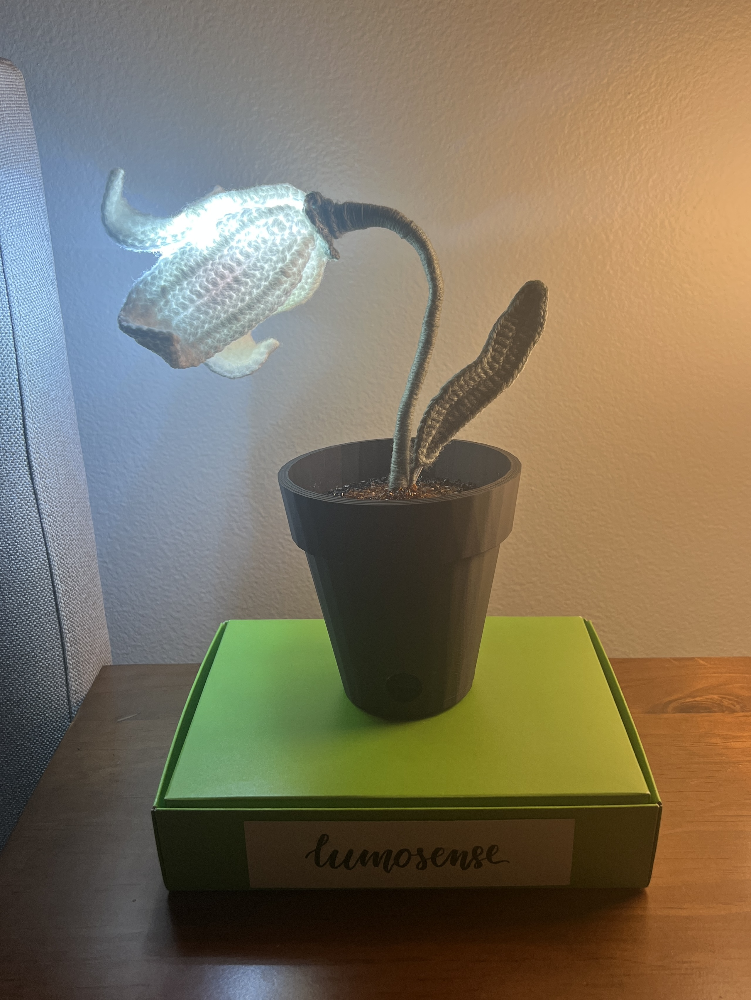

My goal was to create a custom sunrise alarm to help me wake up in the morning. The alarm would go off every day at 8:00 am by playing a tune, and then only shut off when motion is detected (me standing in front of it). I also wanted it to double as a touch-triggered lamp. On the non-technical side, the project needed to be something that is aesthetically pleasing to look at. This meant hiding as many wires as possible, and designing a housing for the Arduino to hide it.
I decided to design my lamp to be shaped like a flower, with a 3d printed “pot” to hide the electrical components. Here is a sketch of my initial idea:

After designing the initial vision for the project, my next step was working on the wiring, then writing the firmware. To execute my idea, I needed several components :



Here is a photo of the final circuit wiring, which I then consolidated onto a smaller board (see second photo)
The only component of the circuit that required calibration was the capacitive touch sensor. To calibrate this, I simply wrote test code to write the read values to the serial monitor. I observed the values read while touching v.s. not touching, and settled on 200 as the limiting value.
To write my code, I used multiple libraries. I used RTClib by Adafruit for my real time clock module and Capacitive sensor by Paul Badger. I decided to play Fur Flise as my morning alarm, and found a collection of passive buzzer song code from Robson Couto.
// Fur elise credit to Robson Couto, 2019
//https://github.com/robsoncouto/arduino-songs
// Library for communication with RTC module
#include
//RTClib library by Adafruit for the RTC module
#include "RTClib.h"
// Capacitive sensor library by Paul Badger
#include
// Library for storing notes without using RAM
#include
// Initalize RTC module
RTC_DS3231 rtc;
// Initalize led strip to pin 8
const int led = 8;
// Initalize buzzer to pin 9
const int buzzer = 9;
// Initalize pir to pin 12
const int pir = 12;
// Initalize capcitive sensor to pin 4 and 2
CapacitiveSensor cs_4_2 = CapacitiveSensor(4, 2);
// Boolean to represent alarm status
bool alarmOn = false;
// Boolean to represent the song status
bool songPlaying = false;
// Boolean that stores if the alarm played today or not to ensure alarm repeats just once daily
bool alarmTriggeredToday = false;
// Boolean to represent led status
bool ledState = false;
// Tracks if capacitive sensor was on or off previously
bool lastTouchState = false;
// Debounce for the previous touch to reduce flickering
unsigned long lastTouchDebounce = 0;
// Debounce for current touch to reduce flickering
const unsigned long touchDebounceMs = 200;
// Set minimum for the touch sensor (tested and then set to 200 based on serial monitor readings)
const long touchSensor = 200L;
// tempo is 80 bpm
int tempo = 80;
// Define all the notes of fur elise (couto)
#define NOTE_B0 31
#define NOTE_C1 33
#define NOTE_CS1 35
#define NOTE_D1 37
#define NOTE_DS1 39
#define NOTE_E1 41
#define NOTE_F1 44
#define NOTE_FS1 46
#define NOTE_G1 49
#define NOTE_GS1 52
#define NOTE_A1 55
#define NOTE_AS1 58
#define NOTE_B1 62
#define NOTE_C2 65
#define NOTE_CS2 69
#define NOTE_D2 73
#define NOTE_DS2 78
#define NOTE_E2 82
#define NOTE_F2 87
#define NOTE_FS2 93
#define NOTE_G2 98
#define NOTE_GS2 104
#define NOTE_A2 110
#define NOTE_AS2 117
#define NOTE_B2 123
#define NOTE_C3 131
#define NOTE_CS3 139
#define NOTE_D3 147
#define NOTE_DS3 156
#define NOTE_E3 165
#define NOTE_F3 175
#define NOTE_FS3 185
#define NOTE_G3 196
#define NOTE_GS3 208
#define NOTE_A3 220
#define NOTE_AS3 233
#define NOTE_B3 247
#define NOTE_C4 262
#define NOTE_CS4 277
#define NOTE_D4 294
#define NOTE_DS4 311
#define NOTE_E4 330
#define NOTE_F4 349
#define NOTE_FS4 370
#define NOTE_G4 392
#define NOTE_GS4 415
#define NOTE_A4 440
#define NOTE_AS4 466
#define NOTE_B4 494
#define NOTE_C5 523
#define NOTE_CS5 554
#define NOTE_D5 587
#define NOTE_DS5 622
#define NOTE_E5 659
#define NOTE_F5 698
#define NOTE_FS5 740
#define NOTE_G5 784
#define NOTE_GS5 831
#define NOTE_A5 880
#define NOTE_AS5 932
#define NOTE_B5 988
#define NOTE_C6 1047
#define NOTE_CS6 1109
#define NOTE_D6 1175
#define NOTE_DS6 1245
#define NOTE_E6 1319
#define NOTE_F6 1397
#define NOTE_FS6 1480
#define NOTE_G6 1568
#define NOTE_GS6 1661
#define NOTE_A6 1760
#define NOTE_AS6 1865
#define NOTE_B6 1976
#define NOTE_C7 2093
#define NOTE_CS7 2217
#define NOTE_D7 2349
#define NOTE_DS7 2489
#define NOTE_E7 2637
#define NOTE_F7 2794
#define NOTE_FS7 2960
#define NOTE_G7 3136
#define NOTE_GS7 3322
#define NOTE_A7 3520
#define NOTE_AS7 3729
#define NOTE_B7 3951
#define NOTE_C8 4186
#define NOTE_CS8 4435
#define NOTE_D8 4699
#define NOTE_DS8 4978
#define REST 0
// Fur elise melody array
const int melody[] PROGMEM = {
NOTE_E5, 16, NOTE_DS5, 16,
NOTE_E5, 16, NOTE_DS5, 16, NOTE_E5, 16, NOTE_B4, 16, NOTE_D5, 16, NOTE_C5, 16,
NOTE_A4, -8, NOTE_C4, 16, NOTE_E4, 16, NOTE_A4, 16,
NOTE_B4, -8, NOTE_E4, 16, NOTE_GS4, 16, NOTE_B4, 16,
NOTE_C5, 8, REST, 16, NOTE_E4, 16, NOTE_E5, 16, NOTE_DS5, 16,
NOTE_E5, 16, NOTE_DS5, 16, NOTE_E5, 16, NOTE_B4, 16, NOTE_D5, 16, NOTE_C5, 16,
NOTE_A4, -8, NOTE_C4, 16, NOTE_E4, 16, NOTE_A4, 16,
NOTE_B4, -8, NOTE_E4, 16, NOTE_C5, 16, NOTE_B4, 16,
NOTE_A4, 4, REST, 8,
NOTE_A4, -4,
};
// determine the number of notes
int notes = sizeof(melody) / sizeof(melody[0]) / 2;
// Variable to track whwere we are at in the song
int currentNoteIndex = 0;
// Variable to track what time the note starts
unsigned long noteStartTime = 0;
void setup() {
//Begin connection with serial monitor
Serial.begin(9600);
// Initalize all 3 pins as input/output
pinMode(led, OUTPUT);
pinMode(buzzer, OUTPUT);
pinMode(pir, INPUT);
// Initially set the led strip to off
digitalWrite(led, LOW);
// Initally set buzzer to off
noTone(buzzer);
// uncommented and then recommented to set RTC time
//rtc.adjust(DateTime(F(__DATE__), F(__TIME__)));
}
void loop() {
// Read current time from the RTC
DateTime now = rtc.now();
// Reset the alarm daily at midnight, by checking if it is midnight..
if (now.hour() == 0 && now.minute() == 0 && !alarmOn) {
//...and resetting the alarm triggered condition to false
alarmTriggeredToday = false;
}
// Create value to read from the capacitive sensor
long capValue = cs_4_2.capacitiveSensor(30);
// Condition to see if the capacitive sensor is touched by checking if the current value is above the threshold value (200)
bool touched = (capValue > touchSensor);
// Check if sensor is touched, and if enough time as passed since the last touch (reduce flickering)
if (touched && !lastTouchState && millis() - lastTouchDebounce > touchDebounceMs) {
// Reverse led state boolean
ledState = !ledState;
// If led is on, turn off, if led is off, turn on (so that the capacitive sensor functions as toggle rather than having to hold it to keep the light on)
digitalWrite(led, ledState ? HIGH : LOW);
}
// If not touched currently, set last touch state to false
if (!touched) lastTouchState = false;
// Otherwise, if it was touched, set to true
else lastTouchState = true;
// If the alarm hasn't triggered yet today, and it is currently 8:30 am
if (!alarmTriggeredToday && now.hour() == 8 && now.minute() == 30) {
// Set alarm trigger to true to avoid alarm going off more than once after turned off
alarmTriggeredToday = true;
// set alarm status variable to true
alarmOn = true;
//Being playing fur elise
startSong();
// Turn led strip on
digitalWrite(led, HIGH);
}
// If alarm is on and motion is detected
if (alarmOn && digitalRead(pir) == HIGH) {
// turn alarm off
stopAlarm();
}
// update the song to the next note
updateSong();
}
// Function to turn the alarm off
void stopAlarm() {
// set alarm status to off
alarmOn = false;
// set song playing to off
songPlaying = false;
// reset song index to the beginning
currentNoteIndex = 0;
// turn buzzer off
noTone(buzzer);
// turn light off
digitalWrite(led, LOW);
}
// Function to start fur elise
void startSong() {
// Set song playing status to true
songPlaying = true;
// play song from beginning
currentNoteIndex = 0;
// Track note start time
noteStartTime = millis();
}
// Function to track the status of the song, removed from main loop so that the pir can detect sound while the song is playind and turn it off
// Otherwise, the pir would not be able to work until the song was done
void updateSong() {
// Do nothing if the song not playing
if (!songPlaying) return;
// Check current time
unsigned long now = millis();
// Variable for whole notes (4 beats)
long wholenote = (60000L * 4) / tempo;
// varilable to track note the song is at
int note = pgm_read_word_near(melody + currentNoteIndex * 2);
// how long the note lasts
int durationCode = pgm_read_word_near(melody + currentNoteIndex * 2 + 1);
// Create variable for duration
unsigned long duration = (durationCode > 0)
// interprets note length based on the duration code (duration code is sometimes negative to represent some notes)
? wholenote / durationCode
: (wholenote / abs(durationCode)) * 3 / 2;
// If the note has gone on for less than the duration
if (now - noteStartTime < duration) {
// If the note is a rest, don't play anything
if (note == REST) noTone(buzzer);
// otherwise, play the note from the buzzer
else tone(buzzer, note);
} else {
// if note is longer than the duration, stop the note
noTone(buzzer);
// .. and advance the current note index to the next one
currentNoteIndex++;
// If the song has completed the last note
if (currentNoteIndex >= notes) {
// turn alarm off
stopAlarm();
return;
}
// reset note start time as we have moved on to the next note
noteStartTime = now;
}
}
I originally wrote my code so that the function to play the song was called in the main loop. However, after debugging, I realized that this prevented the motion sensor from detecting anything while the song was looping. To circumnavigate this issue, I had to create a separate “update song” function, so that the motion sensor could constantly check for motion between each note of the song. I wanted to budget enough time for the final project assembly, so I got ChatGPTs help with my code, particularly for this function.
With my firmware and wiring completed and tested, my next step was creating a CAD model of a “plant pot” with space to fit my wiring, a detachable top, and holes for the PIR sensor as well as the wires for power supply. I used AutoCad to create a model and printed it with PLA.

To create the flower parts of my lamp, I crocheted petals and leaves and assembled them with wrapped, wire, yarn, tape, and hot glue. The wire through each petal, leaf, and the stem made the lamp malleable and fully adjustable. I wrapped yarn around floral wire and the jumped cables to my LED strip to conceal them. I fed the capacitive touch sensor wire through the base of the “stem” to the leaf, where it could be pressed to toggle the light on and off. As a finishing touch, I used nail glue to add beads to the top of the pot to mimic dirt and conceal any excess hot glue. I did not have enough space in the pot to fit all the wiring, so I ended up finding a box that I could cut a chunk from to conceal the rest of the wires


For my final product, I was able to meet all my goals from my concept, besides including a motor. Every morning at 8:00 am, LumoSense lights up and starts playing Fur Elise through the passive buzzer. The small hole in the “pot” houses the PIR motion sensor, which checks for motion while the song is playing, and pauses it immediately as soon as motion is detected. The capacitive touch sensor works to toggle the lamp on and off. Each night at midnight, the lamp resets so that the alarm goes off exactly once a day. To power LumoSense, I used a 12V power supply to power the LED strip separately, while powering the Arduino through the barrel jack. All wiring and cords are contained within the product, except these two.
For my final product, I was able to meet all my goals from my concept, besides including a motor. Every morning at 8:00 am, LumoSense lights up and starts playing Fur Elise through the passive buzzer. The small hole in the “pot” houses the PIR motion sensor, which checks for motion while the song is playing, and pauses it immediately as soon as motion is detected. The capacitive touch sensor works to toggle the lamp on and off. Each night at midnight, the lamp resets so that the alarm goes off exactly once a day. To power LumoSense, I used a 12V power supply to power the LED strip separately, while powering the Arduino through the barrel jack. All wiring and cords are contained within the product, except these two.